Refrigeration System. Engineered from first principles.
Two prototypes built — one for agricultural perishable transport, one meeting MIL-STD requirements for pharmaceutical storage in harsh environments. Every phase documented below.
Every mechanical structure was simulated under real loading conditions. Von Mises stress distributions and factors of safety were evaluated across multiple design iterations to identify the most structurally sustainable load configuration.
Von Mises stress — Design 1
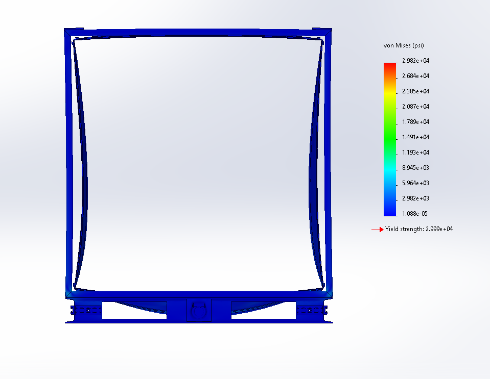
Von Mises stress — Design 2
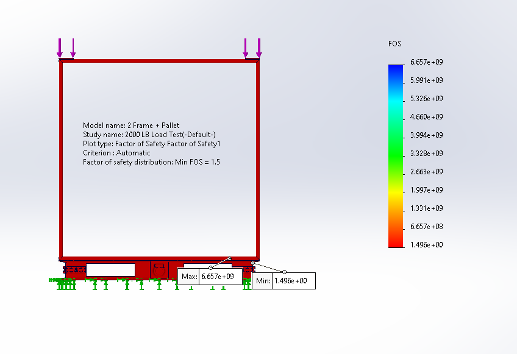
Factor of safety analysis — Design 3
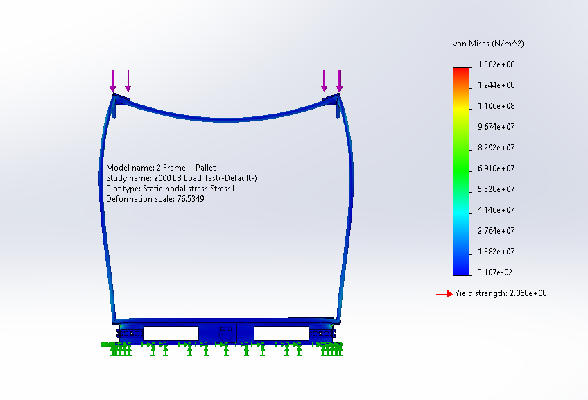
Factor of safety analysis — Design 4
02 — Thermal Analysis
Where cold air goes, we know.
Comprehensive thermal simulations identified cold-air leakage regions in the enclosure design. Targeted design modifications eliminated thermal inefficiencies and improved insulation performance across both prototype variants.
Thermal gradient — cold zone mapping
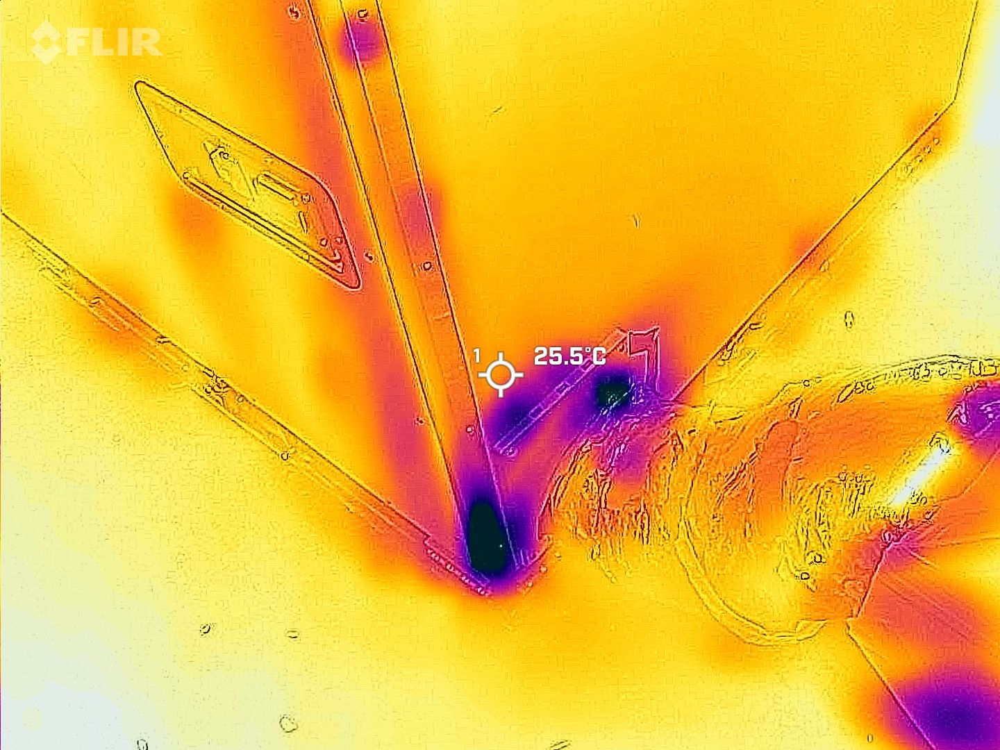
Leakage region identification
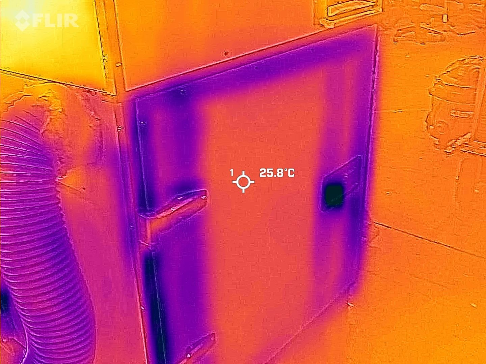
Post-modification thermal profile
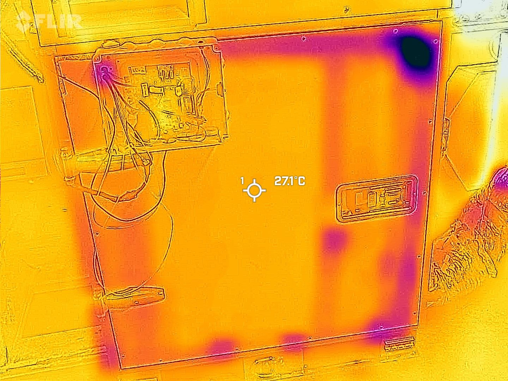
Final design validation
03 — Environmental Testing
ASTM B117 — Zero tolerance for failure.
Corrosion resistance was validated using the ASTM B117 salt spray method, targeting critical weld joints and surface coatings. Testing confirmed long-term durability under harsh environmental and military-grade storage conditions.
Sample A — Before Test
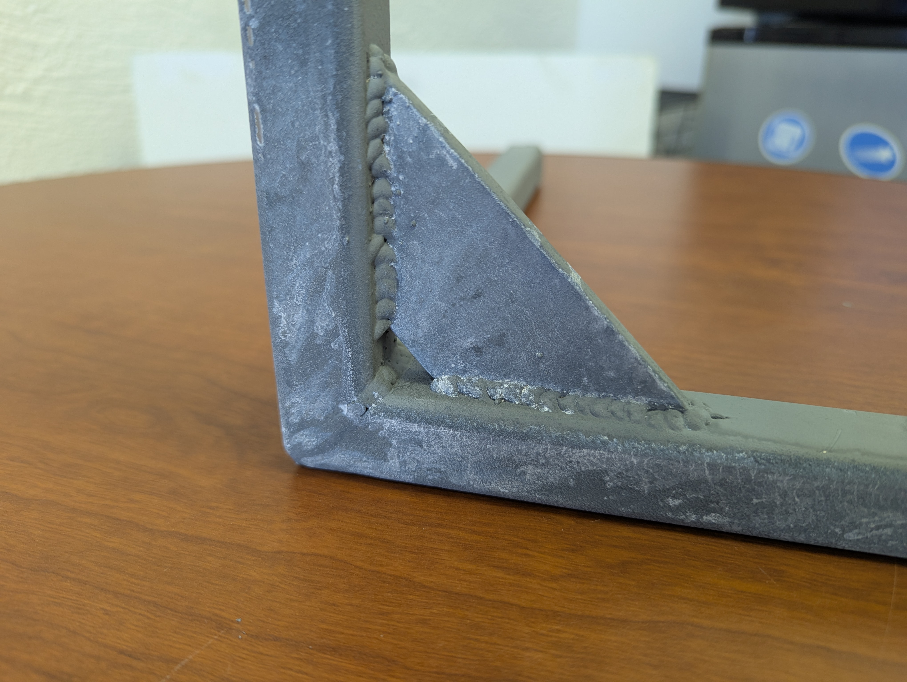
Sample A — After Test
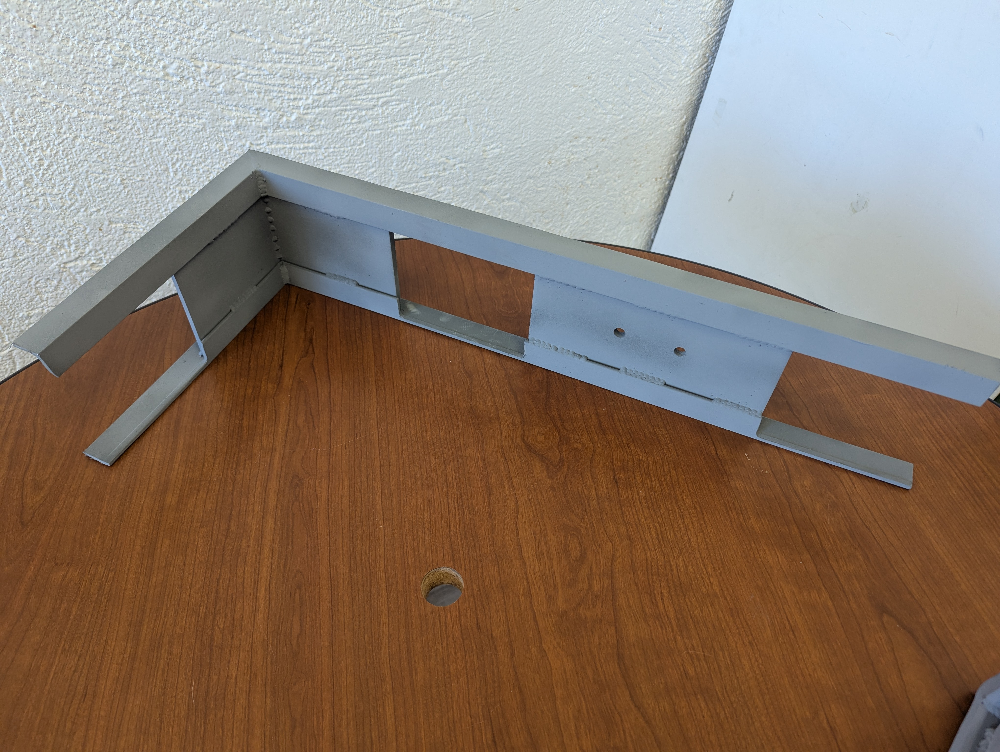
Sample B — Before Test
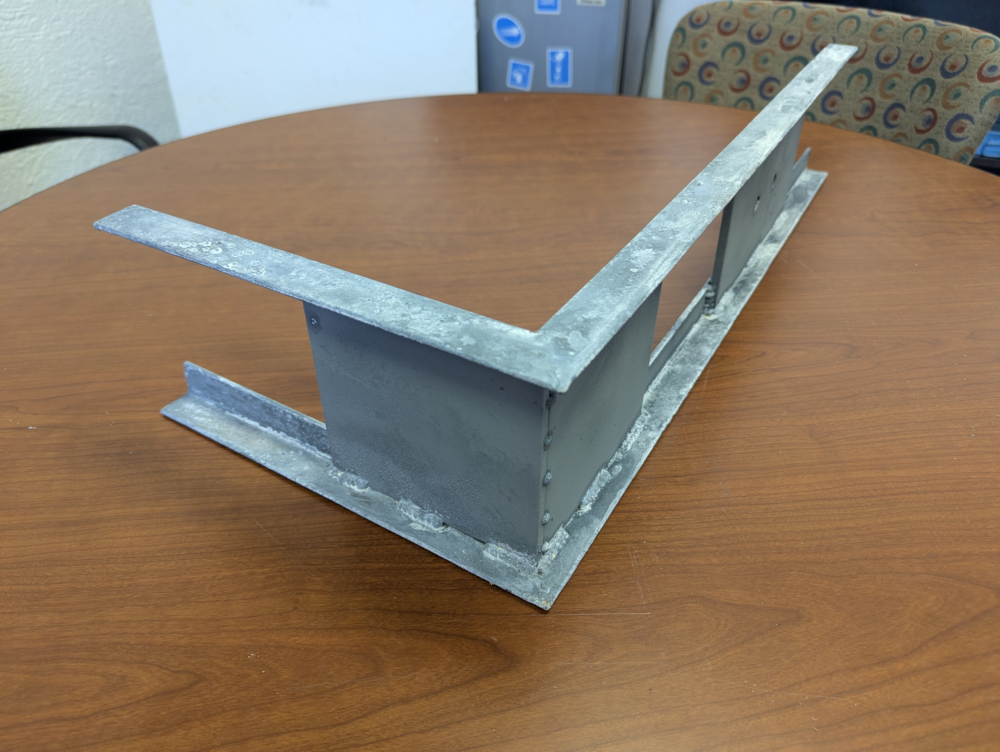
Sample B — After Test
04 — Fabrication & Quality Control
Precision in every cut and weld.
Custom jigs and fixtures maintained dimensional accuracy throughout fabrication. Quality control inspections verified tolerances and surface conditions at every critical assembly stage.
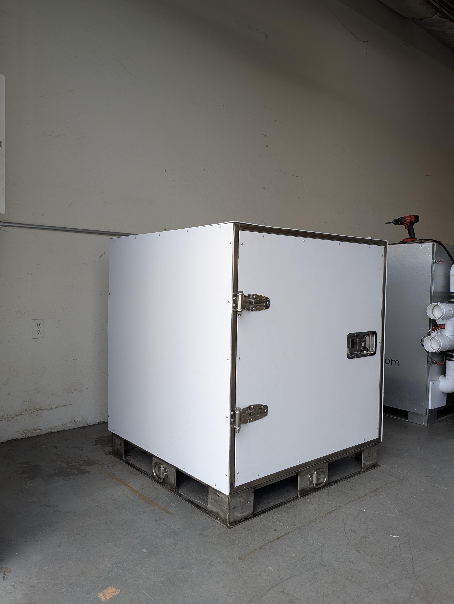
Jig & fixture setup — weld inspection
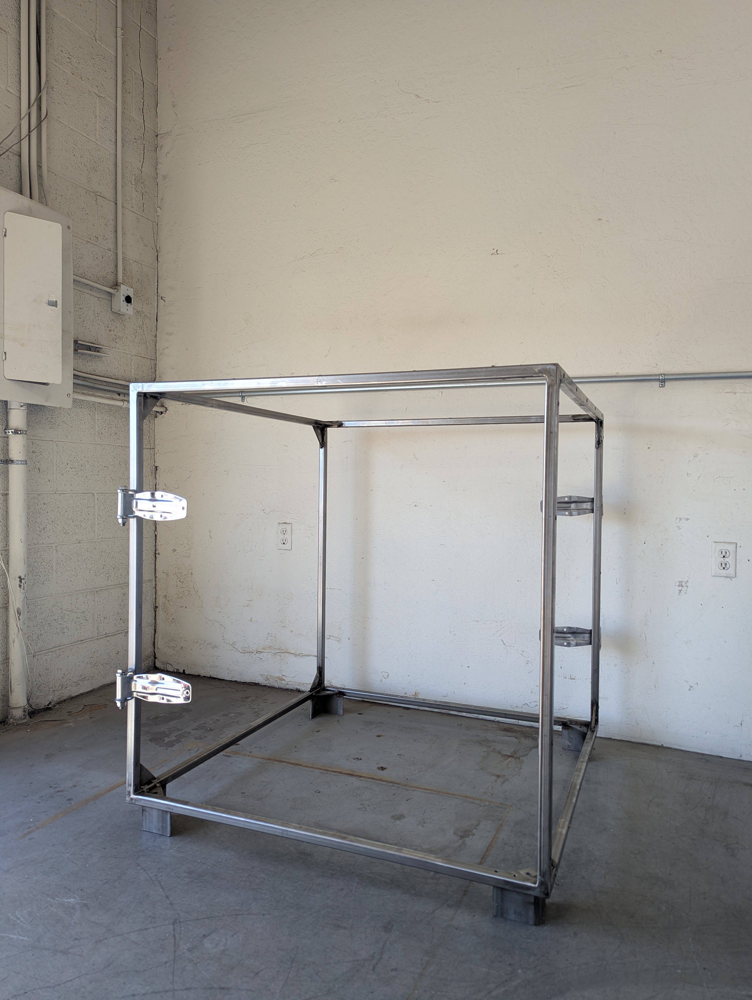
Dimensional tolerance verification
05 — Prototype Development
From simulation to reality.
Physical prototypes were assembled and subjected to functional performance testing. The testing cycle validated simulation predictions and informed final design refinements before production qualification. Two variants built: agricultural transport and military pharmaceutical storage.
Agricultural variant — assembled prototype
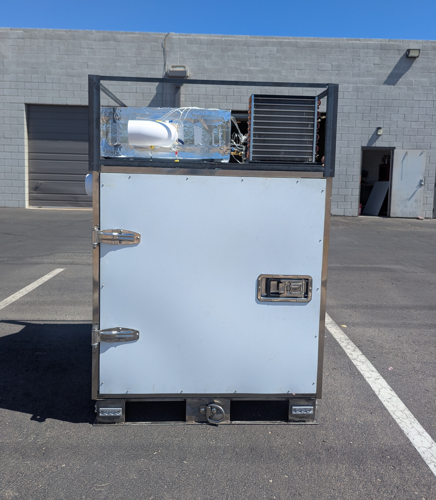
Military pharmaceutical variant
Live Prototype Testing
Functional testing under operational load conditions, validating thermal performance against simulation targets.
All electrical assemblies were verified against schematic diagrams. Wiring harness routing, connection integrity, and system function were validated under operational load conditions to ensure full system reliability.